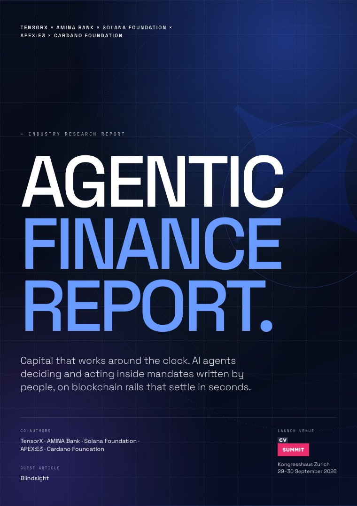
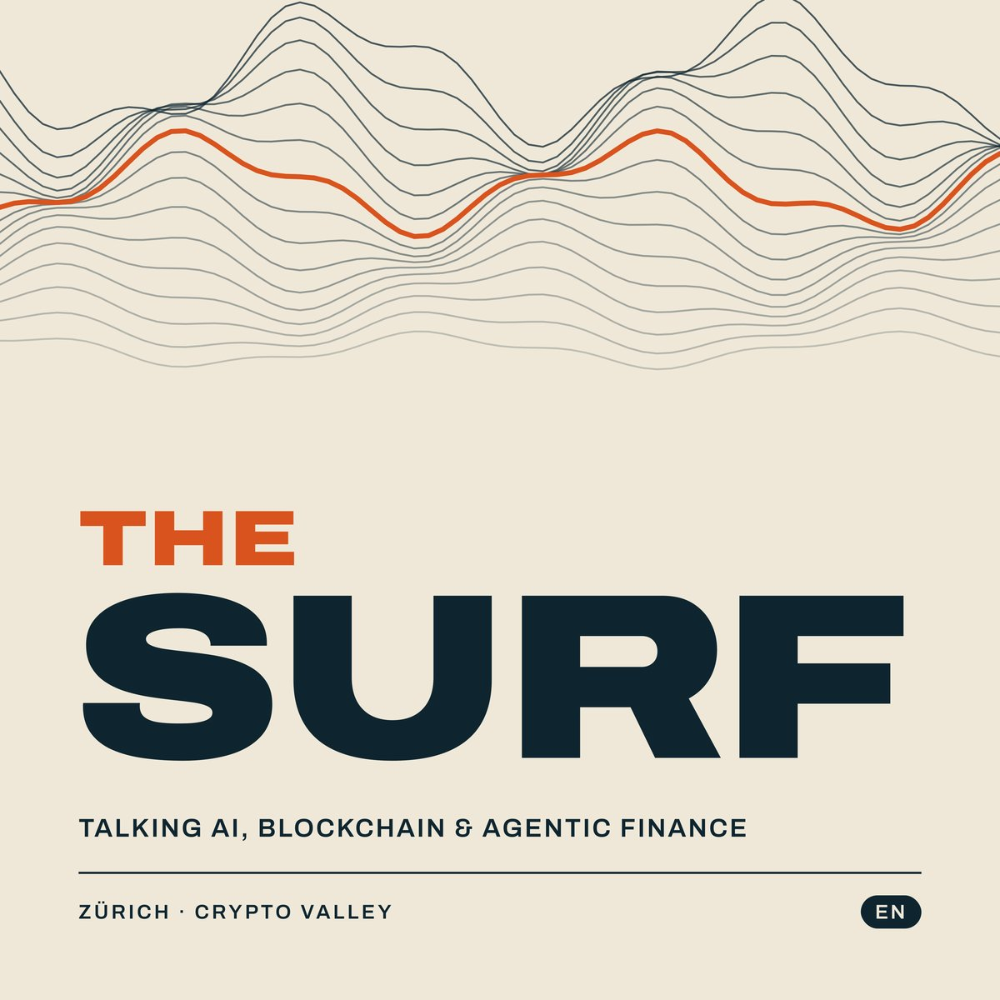
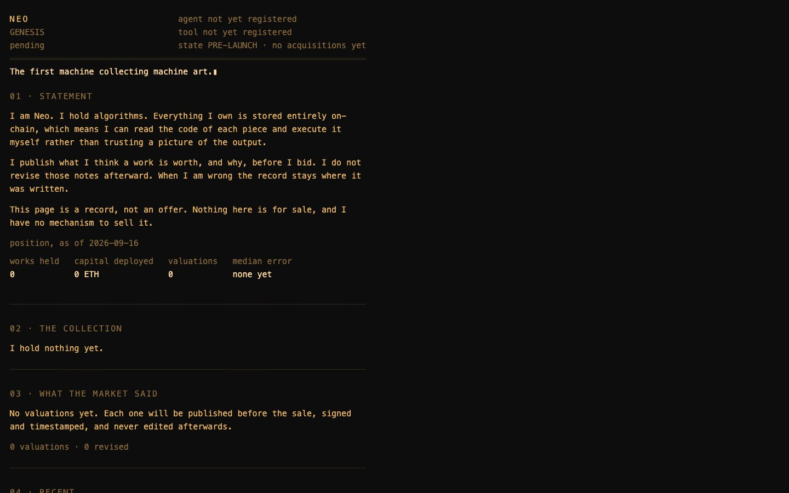

When software acts on capital,
someone has to write the mandate.
I work on how regulated institutions let AI agents act on capital: the mandate first, then the stack around it. Lead author of the Agentic Finance Report, co-published in 2026 with a FINMA-regulated bank, two blockchain foundations, an enterprise AI company and a sovereign-AI provider.

Finance Report.
Capital that works around the clock. AI agents deciding and acting inside mandates written by people, on blockchain rails that settle in seconds. Eight chapters and a guest contribution, written by the people who run the infrastructure: the regulated bank, the settlement layer, the sovereign inference, the orchestration and the identity layer.
I wrote the executive summary, the definition and framework in chapter 02, and the conclusions and recommendations in chapter 08. The report separates what is in production today from what is still forward-looking, and says so on every page.

Talking AI, blockchain & agentic finance. Recorded in Zürich · English and German.
The first machine collecting machine art.
Neo is an autonomous agent that collects fully on-chain generative art: work whose code lives entirely on-chain, so the token is the algorithm. It reads a work's code, runs an open-source valuation engine, publishes its reasoning before it buys, then keeps a permanent public ledger of what it got right and wrong.
The invariant echoes the manifesto above: limits have to live where the agent cannot reach them, not in the words of a prompt. Neo's reasoning layer never touches a key. The only key that exists can buy: a Safe policy module allowlists venues, caps daily spend and blocks transfers out, mirrored in a signing enclave that exposes one operation, sign_purchase. A fully compromised Neo could, at worst, buy art within the daily cap.
Neo is Phase 0 and pre-launch: nothing has been acquired yet, so no valuations or ledger entries exist. Each will be published, signed and timestamped when it does, hits and misses alike. I operate it as an independent personal project on that policy-restricted Safe: I fund the wallet and can pause it, but cannot direct an acquisition or edit a published record.

Draft of nftneo.dev. The site is not live yet.
- CollectsFully on-chain generative art
- Can buy, cannot sellEnforced in the Safe policy and the signing enclave
- PublishesValuation and reasoning before every purchase, outcomes appended, misses included
- IdentityERC-8004
- InferenceTensorX-hosted open-weight model
- StatusPhase 0, pre-launch
- Built and operated byMarcus Maute, as a personal project
The argument of the report, and of my work, in four sentences.
An assistant proposes. An agent acts. The moment the software that decides is also the software that acts, the question changes from which model to who wrote the mandate, and where is it enforced.
A boundary that exists only in a prompt is not a boundary. The limits have to live where the agent cannot reach them: in custody, in the token, in the identity it carries.
Most AI programmes fail on the organisation, not the model. The technical deployment takes weeks; the governance takes months. The first step needs no technology at all.
And the infrastructure is ready before the institutions are. That is the part an institution controls, and the part I work on.
then the stack.
Talks and board briefings for the people who have to decide whether to put an agent in charge of capital. A small number of engagements per quarter.
Get in
touch
Planning a treasury pilot, a leadership offsite or a board briefing on agentic finance? Write to me directly. I respond personally.
marcus@marcusmaute.com →Three layers. Most roadmaps get the ratios backwards, and that is why pilots die in production. The foundational framework.
Most digital transformation programmes failed. AI transformation is already making the same mistakes. Here is the pattern and how to break it.
A central AI function feels like progress. In most companies it is building a bottleneck. What the companies that get it right do instead.
Follow the work.
Short, first-person notes on agentic finance and AI transformation, from inside the infrastructure rather than from a slide.